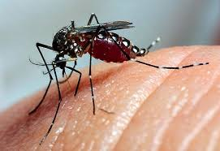

Bem-vindo ao Portal de Informações sobre Dengue
Este site fornece informações atualizadas sobre a situação da dengue em nosso município, incluindo dados recentes, orientações de prevenção e formas de contato para mais informações e denúncias.
A dengue é uma doença viral transmitida pelo mosquito Aedes aegypti. Ela pode causar febre alta, dores musculares e articulares, além de erupções cutâneas. Em casos graves, pode levar a complicações sérias.
